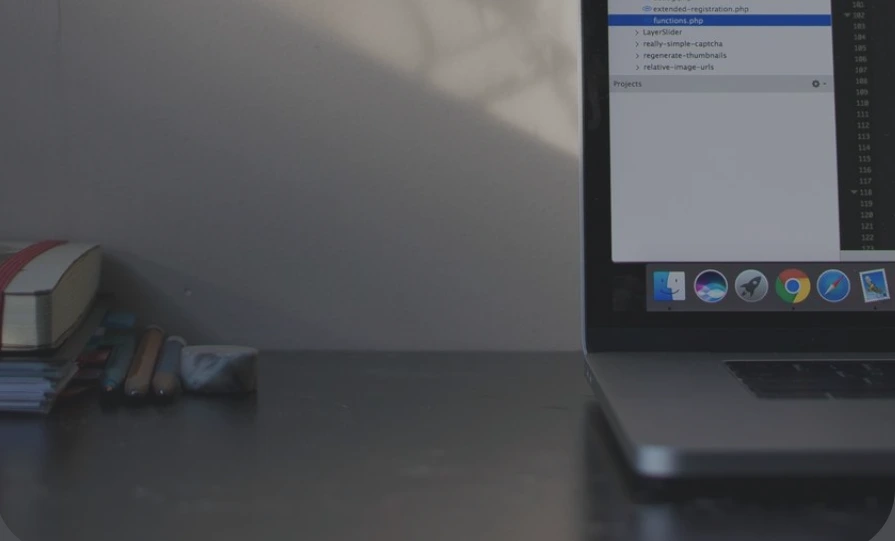
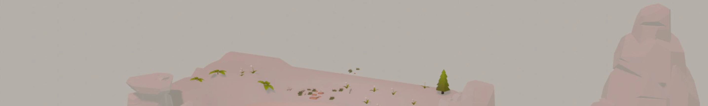
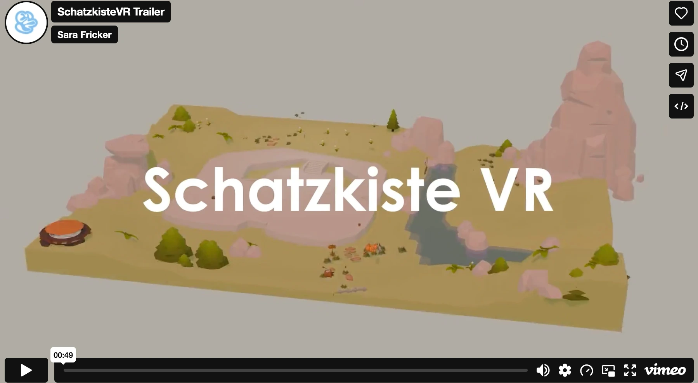
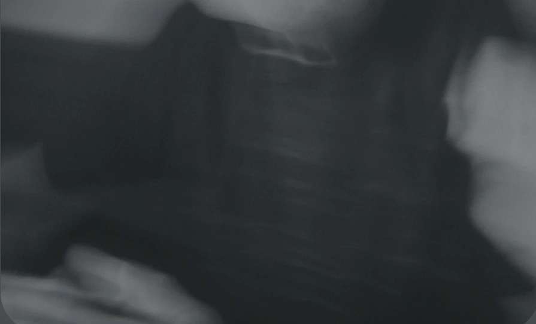
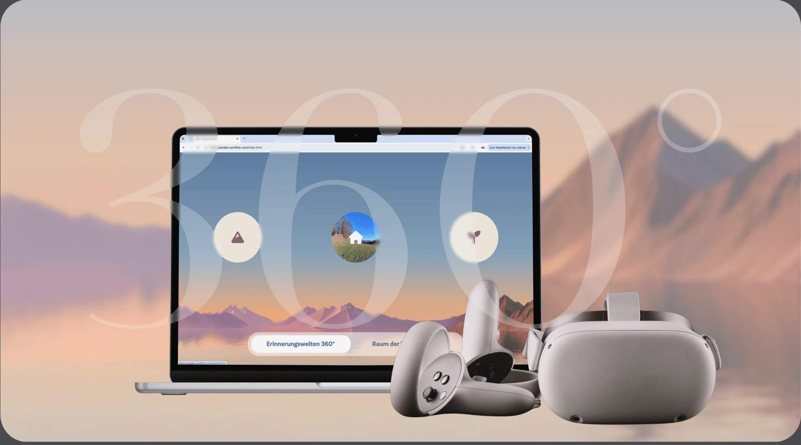
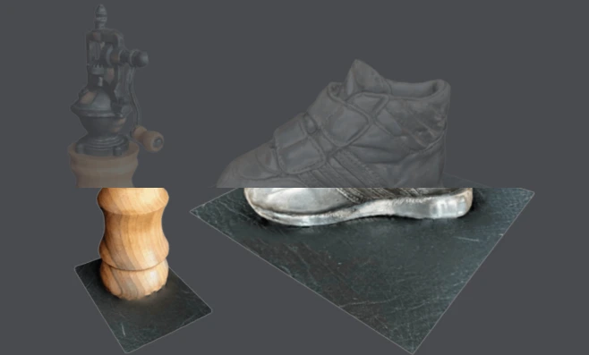
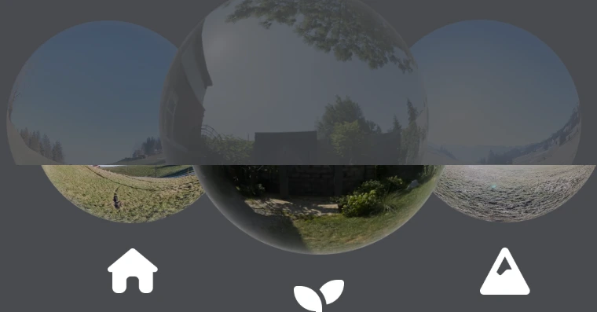
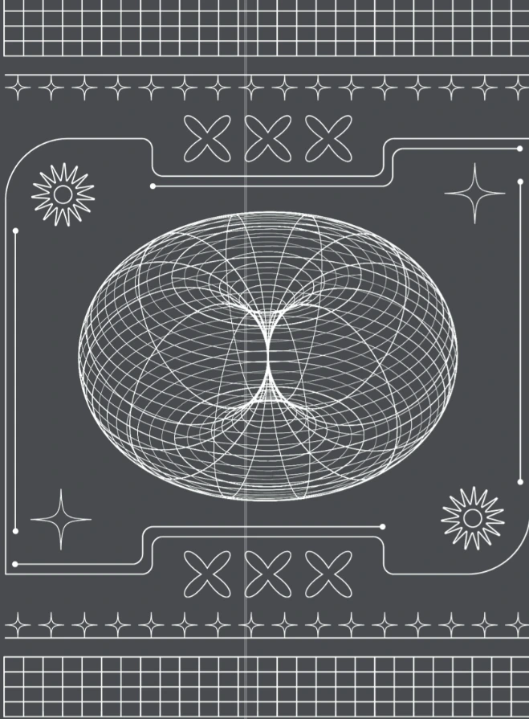

Tools and Software
Adobe XD · Adobe Photoshop · Adobe Illustrator · Photogrammetrie · PolyCam App · Blender · Insta360 Kamera · Skybox AI · HTML · CSS · JavaScript · Three.js · A-Frame Framework · WebXR API · WebGL · Vite

UX/UI Design, Empathy Design,
Human Centered Design,
Storytelling, WebVR, 3D Modelling,
Three.js, A-Frame


Adobe XD · Adobe Photoshop · Adobe Illustrator · Photogrammetrie · PolyCam App · Blender · Insta360 Kamera · Skybox AI · HTML · CSS · JavaScript · Three.js · A-Frame Framework · WebXR API · WebGL · Vite

Miro · Notion · Agile Projektmanagement-Methoden · Analyse bestehender VR-Lösungen · Feldstudien & Kontextanalyse · Qualitative Interviews · Person-Centered Canvas · Know-Me Toolkit · User Journey · Feedback-Capture-Grid · Usability Test
Eine VR-Webanwendung mit zwei immersiven Erlebniswelten, die persönliche Erinnerungen in 360°-Aufnahmen und einer interaktiven 3D-Umgebung erlebbar macht – umgesetzt mit Fokus auf Performance, einfache Bedienung und emotionale Wirkung.


Eine persönliche 3D-Welt voller bedeutungsvoller Gegenstände und kleiner Aktivitäten. Jeder Inhalt ist empathisch auf die Nutzerin abgestimmt und UX-reduziert gestaltet, damit Interaktionen intuitiv, beruhigend und emotional positiv wirken.

Vertraute Lieblingsorte in 360° erleben – gestaltet, um Sicherheit, Orientierung und emotionale Nähe zu schaffen. Die VR-Umgebung unterstützt Menschen mit Frühdemenz mit klarer Führung, ruhigen Bildern und minimaler kognitiver Belastung.
Verstehen. Vorstellen. Gestalten. Erleben.
Von der Vision zur erlebbaren Welt.

Verstehen, Beobachten,
Einfühlen, Sammeln
Analysieren, Skizzieren,
Ideen formen
Gestalten, Modellieren,
Implementieren
Erleben, Testen,
Reflektieren, Evaluieren
Solch ein Projekt trägt auch viele Learnings mit sich. Hier sind die wichtigsten Erkenntnisse und Lernerfolge, die ich aus dem Projekt ziehen kann.
Die Perspektiven der Nutzerin, ihrer Angehörigen und der Fachpersonen müssen den Gestaltungsprozess von Anfang an begleiten.
Interviews, Beobachtungen und Tests brauchen einen Rahmen, der zu den Bedürfnissen und Möglichkeiten der beteiligten Menschen passt.
Vertraute Inhalte und eine ruhige Gestaltung können helfen, Sicherheit und persönliche Nähe zu vermitteln.
Zuhören, Zeit und ein respektvoller Umgang bilden die Grundlage für ein Verständnis der persönlichen Bedürfnisse.